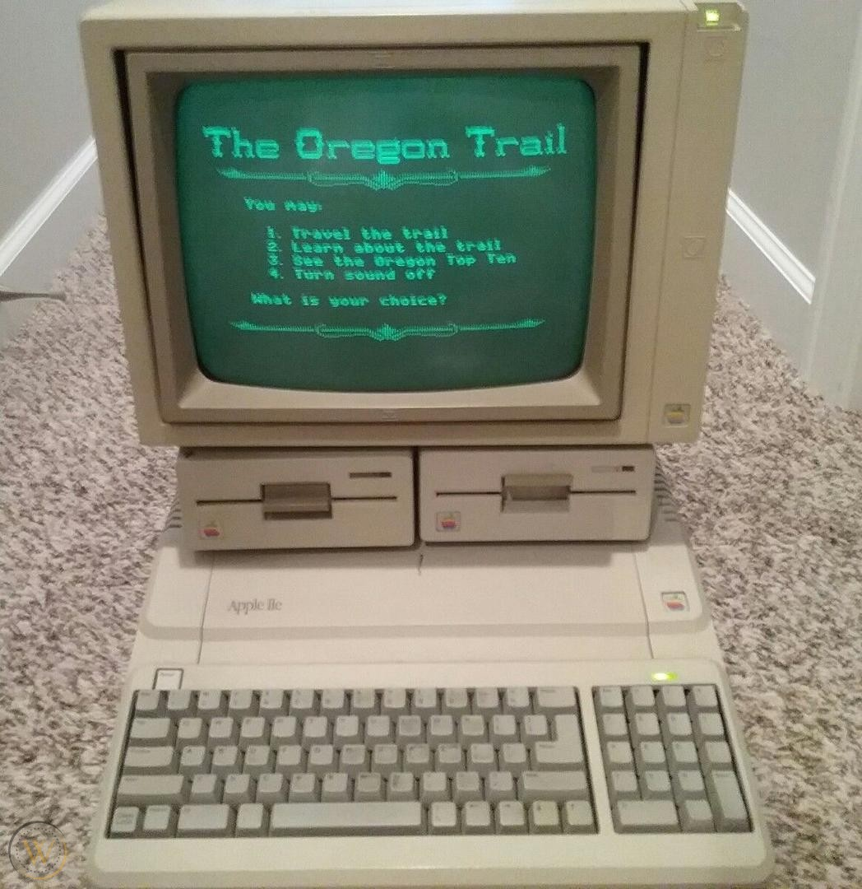

First Post: An Introduction
Date: July 13, 2020

Welcome to my blog "Organized Mess", a place my mind will dump a variety of content, from anime/manga/video game reviews, to personal thoughts and my own writings. I thought I'd christen my blog with a little about me and my journey to now.
Professionally, I’ve been an IT guy for over 10 years, but my love of technology and computers started when I was 2 years old with my first gaming console, the Atari 2600. I was immediately hooked with Pitfall and Pac-man, followed by an Apple IIe PC a few years later. Games basically became my life from that point on, and I was entranced with the concept of games. How they played, looked, the story, music, and more, I fell in love with games, and like most every other kid I'm sure, I wanted to be a game developer because I loved the thought of putting the ideas in my head into the world.

Fast forward a decade or so to my high school days in the late 90's, where one of my first elective classes was web design. Back then, CSS was barely in existence and I had no clue it even existed, so I was creating every website in pure HTML (...yeah). I've never been great at design or being artistic, so I ended up leaving it in the dust and moving on to more IT-based studies, and a C++ stint in college that I ended up dropping because the teacher was terrible and made me hate it.
Fast forward once again to late 2019, where I'm a 34 year old re-discovering software development by chance after reading an off-hand comment somewhere online. I immediately fell down the rabbit hole looking at all the programming languages, not realizing just how many were out there, and I got incredibly excited with all of the choices! I knew this was the path I wanted to pursue, no matter how difficult for many reasons: sake of learning, all of the stuff I can create, a job I will love and enjoy, make more money for a better life, and the possibility of being able to live abroad to name a few!

I started with learning front end web dev, but the more I got into it, the more I realized I wasn't a big fan of it (I know it seems strange, given you're on a site I created, but stay with me!) At this point, a friend recommended I learn C# instead, so I began and found I really enjoyed how it writes and looks. While I wouldn't turn down a position as a frontend developer, because it would allow me to get my foot in the door, I think my path lies more with either backend or another type of development like desktop, mobile, machine learning, or more, only time and opportunity will tell!
Which brings me to this website I created as a place to eventually show off projects I complete, as well as this blog to put my thoughts, ideas, and stories to a written form (I might incorporate YouTube videos later too). I feel having a portfolio site is important. I could have created this site with much better frontend templates and a fleshed-out backend, but I wanted to approach this with all the skills I currently possess, even if frontend is not my personal favorite. This just becomes a long-term, living project I can keep improving on, like adding a comment section, users, and more!
<-- Return